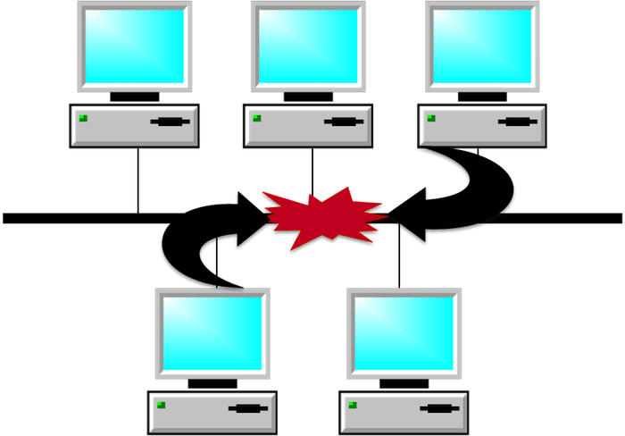
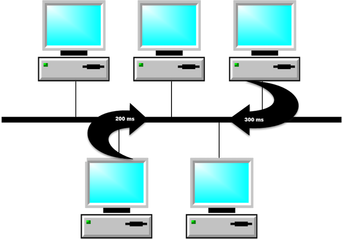

Ethernet Technology以太網技術 <<
Previous Next >> Evolution of Standards標準的演變
Carrier Sense Multiple Access&Collision Detect載波偵聽多路訪問和衝突檢測
The nature of half-duplex transmission brought about the need for CSMA/CD, which works by allowing all devices to transmit data whenever they wish.
半雙工傳輸的性質帶來了對CSMA / CD的需求，它允許所有設備在需要時傳輸數據。
The carrier sense portion means that the device “listens” to the network first to find a “break” in the conversation.
運營商感知部分意味著設備首先“監聽”網絡以在會話中找到“中斷”。
If the device doesn’t hear other devices transmitting, then it begins its transmission.
如果該設備聽不到其他設備的傳輸，則開始傳輸。
Multiple access refers to every device having equal access to the network at all times.
多路訪問是指每台設備始終具有對網絡的平等訪問權限。
This is unlike the token ring network in which each device had to wait for the signal (token) before transmitting.
這與令牌環網絡不同，在令牌環網絡中，每個設備都必須在發送之前等待信號（令牌）。
Finally, we have collision detection as part of the CSMA/CD control method.
最後，我們將碰撞檢測作為CSMA / CD控制方法的一部分。
If, by chance, two devices both were ready to transmit, they “listened” to the network for a “lull” in the conversation, and both started transmitting at the same time, the devices are able to detect that they both transmitted at the same time and caused a collision.
如果偶然地兩個設備都準備好發送，則它們在通話中“偵聽”網絡中的“失敗”，並且兩個設備都同時開始發送，則這些設備能夠檢測到它們都在發送時發送。同時又造成了碰撞。
The image below depicts both the CSMA/CD and CSMA/CA simplified algorithm.
下圖描述了CSMA / CD和CSMA / CA簡化算法。
The left branch is CSMA/CD used by half-duplex Ethernet and the right branch is CSMA/CA used by 802.11 wireless LAN, which is also half-duplex.
左分支是半雙工以太網使用的CSMA / CD，右分支是802.11無線LAN（也是半雙工）使用的CSMA / CA。

In the example shown below, four devices are connected in a physical bus topology. Each device has equal access to the network.
在下面顯示的示例中，四個設備以物理總線拓撲連接。每個設備對網絡都有平等的訪問權限。
Here, all the devices are listening, trying to determine if any other device is communicating before beginning transmission.
在這裡，所有設備都在監聽，試圖確定是否有其他設備在開始傳輸之前進行通信。

In the next image below, we see an example of two devices that transmitted at the same time.
在下一張圖片中，我們看到了兩個同時傳輸的設備的示例。
This simultaneous transmission resulted in a data collision, causing the transmission to be broken.
這種同時傳輸導致數據衝突，導致傳輸中斷。

When a collision is detected, both devices choose a backoff time at random, and then attempt to retransmit again.
當檢測到衝突時，兩個設備都會隨機選擇一個退避時間，然後嘗試重新傳輸。
In the diagram below, the computers choose to wait 200 milliseconds and 300 milliseconds, respectively.
在下圖中，計算機分別選擇等待200毫秒和300毫秒。
When that time is up, they will attempt to sense if another machine is already transmitting.
時間到時，他們將嘗試檢測另一台機器是否已經在傳輸。
If there is nothing detected, the first machine will transmit its message. Once completed, the second machine will then transmit its message, after its 300 millisecond wait time.
如果未檢測到任何內容，則第一台機器將發送其消息。一旦完成，第二台機器將在其300毫秒的等待時間之後發送其消息。

Recovering from a collision with random backup timers.
使用隨機備份計時器從衝突中恢復。
Ethernet Technology以太網技術 <<
Previous Next >> Evolution of Standards標準的演變